DDoS mitigation guide
20 minute read
Summary
Who is this guide for?
Is the website you run or manage experiencing slowed performance or constant outages? It could be an issue with configuration, or it could be something more targeted.In the course of our work, we have seen and responded to what we believe was a sophisticated DDoS attack (defined below) that was aimed at effectively censoring an important media platform in the region. In the documentation that follows, we have reflected on this practical experience and consolidated it into a guide to respond to similar attacks.
For publishers, writers or activists that believe they are facing such a targeted attack, we advise you to familiarize yourself with some of the core concepts below, and then pass this documentation guide on to your technical team for the technical configurations that will hopefully get your website back up and running and maximally protected against any attacks in the future.
What is DDOS?
Denial of Service (DoS)
Denial of Service (DoS) attacks are a form of cyber attack that aim to disrupt a specific online service or website on the internet by flooding its infrastructure with a high quantity of false requests exceeding the site’s handling capacity in order to eventually render it inaccessible to its usual audience.
Such methods can be utilized to different ends, but the most common end aims at distributing the service/site, either continuously over time or for a specific period. DoS attacks can also aim to incrementally increase disruptions over time in order to increase the costs of hosting and mitigation.
Distributed Denial of Service (DDoS)
In the event that you are dealing with a DoS attack, the most effective response would be to simply identify and block the source of the attack on the network level. And with the variety of web application firewall (WAF) services and different traffic control and filtering software employed on modern servers, it can be quite simple to deploy such a response.
But what happens when things are more sophisticated?
The task of mitigation and response becomes significantly more difficult when a DoS attack becomes a DDoS attack.As suggested in the name, a Distributed Denial of Service attack is a DoS attack being launched and coordinated using a number of machines — usually compromised devices “distributed” over different networks and geographic locations.
Atop this decentralized layer usually sits various obfuscation techniques that make the malicious requests look as similar as possible to normal traffic. In practical terms, this makes the chance of mistakenly blocking legitimate sources of traffic in the mitigation response significantly higher.
How does a DDos attack work? What is a Botnet?
The number of devices connected and exposed to the public internet increases each day. However, there is not a corresponding move to ensure that security benchmarks and software updates are properly and regularly implemented, creating a situation whereby outdated software with publicly known vulnerabilities can be exploited.
This is the case, for example, with a significant amount of Internet of Things (IoT) devices, which are usually devices running simple software, such as coffee machines, printers, smart cameras, routers, etc. These devices have often not regularly been updated to run the latest firmware version or have been left with the default username and password.
A DDos attack relies on a malicious actor hijacking such vulnerable devices to form a network of malicious devices, or a botnet, through which the actor can then issue specific commands, such as getting them all to keep sending requests to a specific website or server.
The malicious actor can utilize this network of devices to their own benefit or rent it to someone else. One of the most recent and infamous botnets is the Mirai botnet.
Identification
Identifying a DDoS attack in real-time might seem simple enough, but anyone who has gone through the experience of hosting or managing a server that is exposed to the internet knows that there is usually a lot of random noise showing all the time on the server logs that is usually not harmful in nature, such as search engines bots.
This fact makes it more complicated to identify and track the malicious traffic and its sources. It’s also important to determine whether the occurring downtime is a result of a server component malfunction, misconfiguration or an attack.
Note on best practice
It’s always a good practice to make sure server logs are well configured and accessible. This is especially the case with any effort to identify and mitigate a DDoS attack. Being able to access and to understand live logs will be a crucial factor in the process.
It’s also important to know which logs to look at. As linux-based distributions (Ubuntu, Redhat, etc.) are the dominant operating system in the server hosting market, we’ll be using it as an example in this case.
Our example
Linux operating systems normally store logs under /var/log/. In this directory, you’ll find different types of logs:
- Logs from the operating system and its different components (kernel, hardware management, networking, firewall events)
- Logs created by specialized software installed by the user and running on the server, such as web servers (Nginx, Apache), runtime environment for a programming language (PHP, Java, Javascript), or database servers (MySQL, MongoDB)
For example, when trying to identify a DDoS attack on a WordPress-based website, we need to look at logs of the software used to run the website:
- Web server (Nginx, Apache)
/var/log/nginx//var/log/nginx//var/log/apache2/
- PHP runtime (php-fpm in case of nginx)
/var/log/php//var/log/php*/
- Database server (MariaDB, MySQL, MongoDB)
/var/log/mysql/
There are some signs to look for in the logs
- A sudden or unusual spike in incoming traffic
- Too many requests coming from the same IP addresses or a specific range of addresses over a short period of time
- Sudden increase in incoming requests over seemingly random and non-existent pages/urls on the server, returning 404 errors
- Increasing number of 403 and 405 errors, indicating service outages as a result of the server exhausting the limit of its hardware capacity causing all types of system errors and eventually crashing
If the attacks are operating on HTTP protocol, the user-agent request header – which is used by software operating within a network protocol to identify itself, e.g. Mozilla/5.0 (platform; rv:geckoversion) Gecko/geckotrail Firefox/firefoxversion – in incoming traffic will look suspicious and can help in the identification process when cross checked with IP addresses.
But, often things aren’t so straight forward
Attackers can easily change the user-agent request header used by their software to imitate a specific software such as well known search engine bots or normal browsers, such as Google Chrome or Firefox. (E.g.AdsBot-Google (+http://www.google.com/adsbot.html)).
Luckily, a lot of suspicious user-agents have already been identified
Example of suspicious user-agents:
- Baiduspider+(+http://help.baidu.jp/system/05.html)`
- Nuclei - Open-source project (github.com/projectdiscovery/nuclei)
You can find some public curated lists of potentially malicious user agents
Mitigation
The ultimate goal of a targeted DDoS attack is to exhaust the target’s available resources over time, making it increasingly difficult to support the infrastructure needed for the website and the technical expertise required to keep it running against the attack.
That means, successful mitigation will hinge on detecting and either blocking or throttling most of the malicious requests.
What you'll find in the sections below
We detail two principal approaches that can be used in combination to create a robust mitigation approach:
- server configuration mitigation measures and
- mitigation through the use an external service, such as web application firewalls, content delivery networks and caching.
Server configuration mitigation measures
We outline, below, a number of useful software that can be installed on the server that can be helpful in DDoS mitigation: Fail2ban and Crowdsec.
Fail2ban
Fail2ban is a UNIX-like systems specific software (Linux, BSD, macOS). The main function of Fail2ban is to monitor a specific set of system logs and identify malicious behavior based on sets of rules and predefined patterns. Fail2ban needs to be configured according to the nature and known attack vectors of the targeted software/service.
The firewall software installed on the server can then be utilized to block the detected bad actors for a specific time or indefinitely.
Fail2ban is a very flexible software and can be configured to monitor a wide variety of services and endpoints. However, setting up and successfully configuring everything for multiple services can be a bit tricky at first.
Fail2ban configuration files are organized this way:
/etc/fail2ban/
├── action.d
├── fail2ban.d
├── filter.d
│ └── ignorecommands
└── jail.d
What are jails?
Jails are used to control and define the service we need to monitor. Take the example where we are creating a jail to ban IP addresses that are getting a lot of forbidden errors on their requests, which means they are attempting to access a restricted endpoint repeatedly.
In this scenario, we need to create and set the name of the filter we are going to create later, the action, and the path of the log file we are monitoring.
[nginx-forbidden]
enabled = true
filter = nginx-forbidden
action = iptables-multiport[name="nginx-forbidden", port="http,https"]
logpath = /var/log/nginx/*error*.log
What are filters?
Filters define the patterns to look for in the log files. The filter uses regular expressions to define the pattern. We also have the ability to define a pattern that should be ignored, which can be useful to whitelist specific requests.
[Definition]
failregex = ^ \[error\] \d+#\d+: .* forbidden .*, client: <HOST>, .*$
ignoreregex =
What are actions?
Actions are used to define how Fail2ban will respond after identifying the pattern defined in the filter. Actions can be used, for example, to block the offending IP addresses using the firewall UFW (Uncomplicated Firewall).
Ultimately executing a command that looks like ufw deny from xxx.xxx.xxx.xxx to any
# Fail2Ban action configuration file for ufw
#
# You are required to run "ufw enable" before this will have any effect.
#
# The insert position should be appropriate to block the required traffic.
# A number after an allow rule to the application won't be of much use.
[Definition]
actionstart =
actionstop =
actioncheck =
actionban = [ -n "<application>" ] && app="app <application>"
ufw insert <insertpos> <blocktype> from <ip> to <destination> $app
actionunban = [ -n "<application>" ] && app="app <application>"
ufw delete <blocktype> from <ip> to <destination> $app
[Init]
# Option: insertpos
# Notes.: The position number in the firewall list to insert the block rule
insertpos = 1
# Option: blocktype
# Notes.: reject or deny
blocktype = reject
# Option: destination
# Notes.: The destination address to block in the ufw rule
destination = any
# Option: application
# Notes.: application from sudo ufw app list
application =
# DEV NOTES:
#
# Author: Guilhem Lettron
# Enhancements: Daniel Black
Crowdsec
If the process of configuring Fail2ban seemed a bit too complicated, Crowdsec, an open-source project built on similar principles as Fail2ban, should be very helpful.
CrowdSec is a free, modern & collaborative behavior detection engine, coupled with a global IP reputation network. It stacks on Fail2ban’s philosophy but is IPV6 compatible and 60x faster (Go vs Python), uses Grok patterns to parse logs and YAML scenario to identify behaviors. CrowdSec is engineered for modern Cloud / Containers / VM-based infrastructures (by decoupling detection and remediation). Once detected, you can remedy threats with various bouncers (firewall block, nginx http 403, Captchas, etc.), while the aggressive IP can be sent to CrowdSec for curation before being shared among all users to further improve everyone’s security. — Crowdsec developers
As the developers describe it above, Crowdsec functions in a way similar to Fail2ban but comes with more features and is way simpler to set up. Another key feature of Crowdsec is the sharing of offending IP addresses across the community using it, effectively creating a community driven IP reputation system.
For instruction purposes, say we are looking at a simple installation of Crowdsec to monitor incoming traffic to a Wordpress instance, but, first, we need to briefly define some of the inner parts of the software in order to get an initial understanding of how it functions. Crowdsec offers great documentation, which you can find here.
Building on the work of others
We will be using Crowdsec’s own documentations. You can refer to the concepts page for a better understanding of the software components.First, we need to install Crowdsec. Refer to the installation page for installation instruction specific to your operating system.
Note on best practice
While it’s possible to have Crowdsec installed on a standalone server, it’s much easier to have it running on the same machine as the target website. Installing it on a standalone server would require additional configurations for authentication and security.
To install Crowdsec on a standalone server, you can consult Crowdsec’s docs, here.
Our example
To install on Ubuntu/Debian, run:
curl -s https://packagecloud.io/install/repositories/Crowdsec/Crowdsec/script.deb.sh | sudo bash
apt install Crowdsec
And then initiate the configuration wizard:
/usr/share/Crowdsec/wizard.sh -c
The configuration wizard will appear.
First, the script scans for logs on your system and which software they belong to. You can deselect services that you don’t want Crowdsec to monitor.
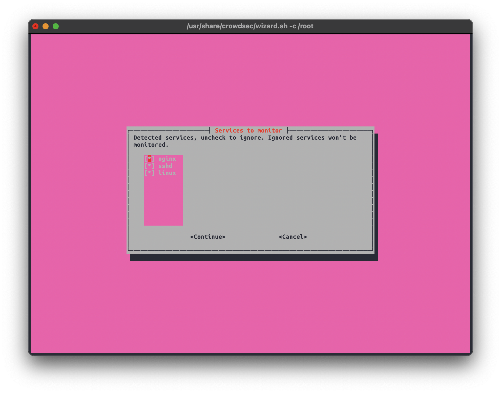
Here, you need to select the “collections” that fit your use case.
”Collections” contain ”parsers” which help the software understand how to process the logs produced by a specific software and “scenarios” that are used to describe the attack scenario and how it should look in the logs as a pattern.
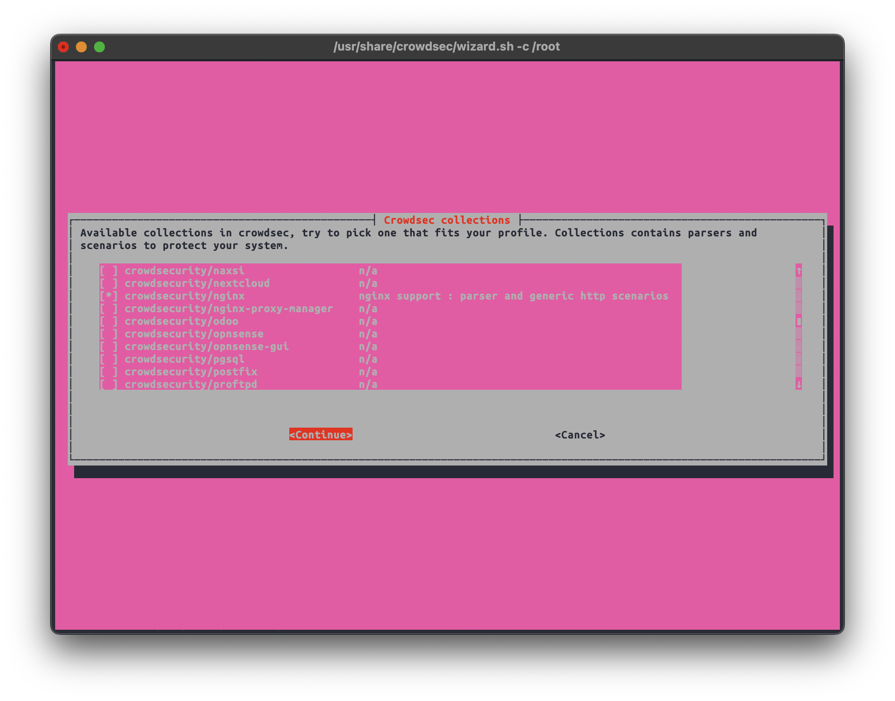
Some of the suggested collections in this example
- Crowdsecurity/whitelist-good-actors
- Crowdsecurity/wordpress
- Crowdsecurity/http-cve
- Crowdsecurity/apache2
- Crowdsecurity/nginx
In the next stage, we can confirm the detected individual log files for every software. We can deselect any file we don’t want monitored.
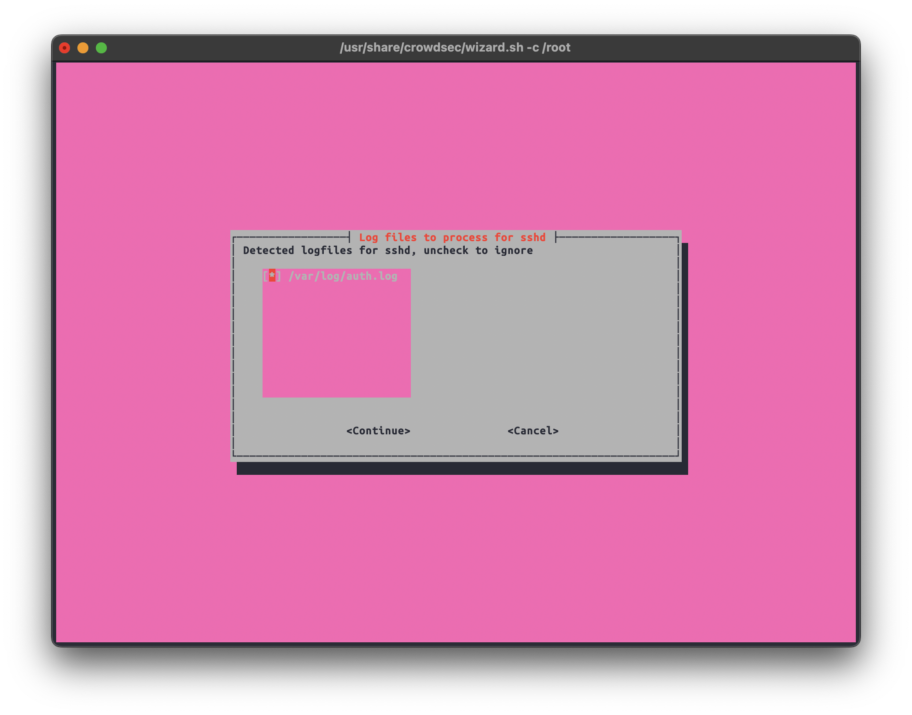
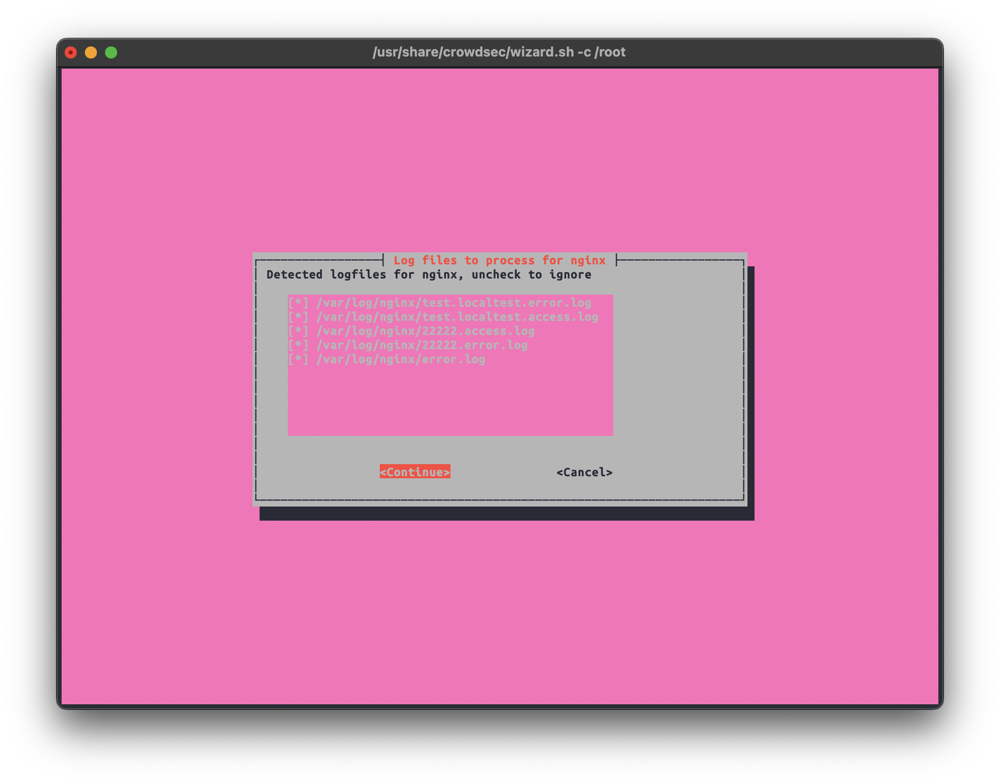
Now, we need to install the Crowdsec Wordpress plugin on the targeted instance.
The plugin is available on Wordpress plugin store, and it can be downloaded from the project Github as well.
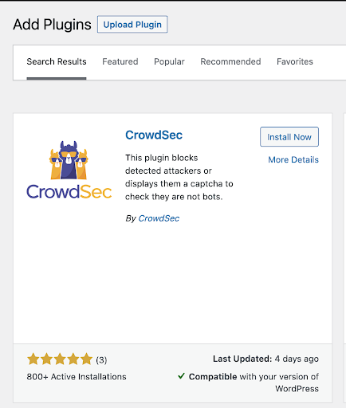
Once the plugin is installed and enabled, it should be accessible from the Wordpress dashboard.
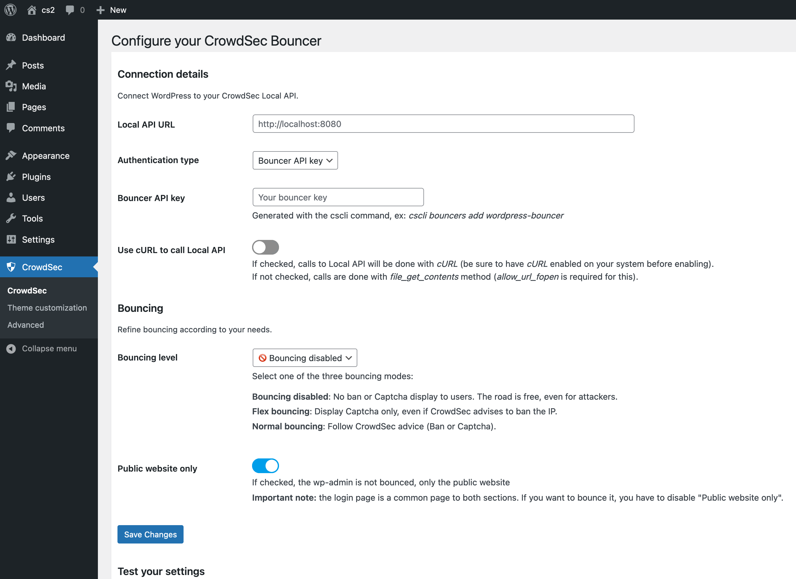
The first thing to set here is the Local API URL, which is the address of the server that’s running Crowdsec. If it’s installed on the same machine as the Wordpress instance, it should be set to http://localhost:8080
Now, we need to go back to the command line to generate the Bouncer API key. The bouncer will be used to authenticate its connection with Crowdsec.
Now, we get the key by running:
cscli bouncers add wordpress-bouncer
The result should be a random key that looks like this:
Api key for 'wordpress-bouncer':
4df97788c6a4967ba16cbd689d2395df
Please keep this key since you will not be able to retrieve it!
After we test these settings and confirm the connection between the Wordpress plugin and Crowdsec is working, there are some settings in the plugin that we can use to fine-tune the bouncing process and make it work best for our use case.
Here, we can customize the message that will be shown to a banned/bounced client.
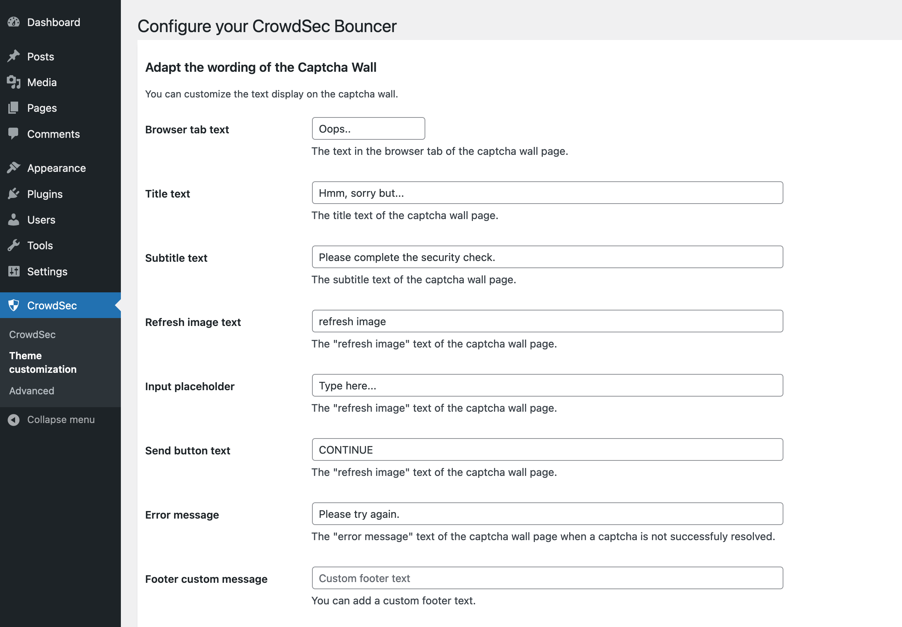
The default looks like this:

We then need to open the advanced settings tab
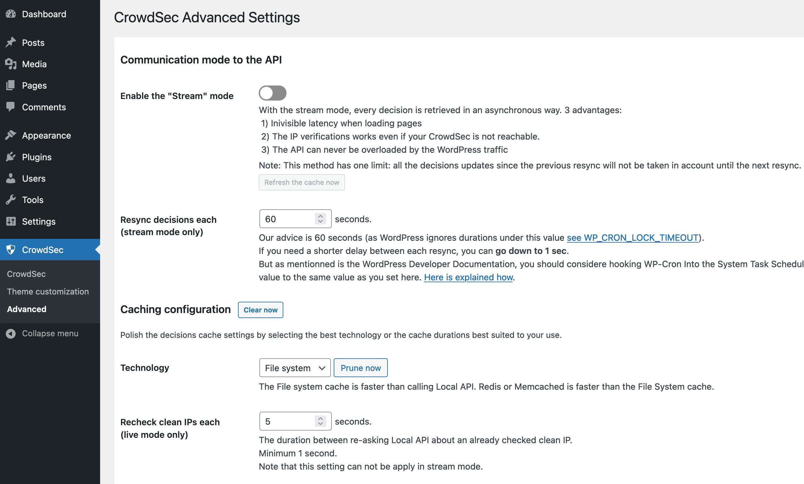
First, we need to enable stream mode and lower the Resync decision each.
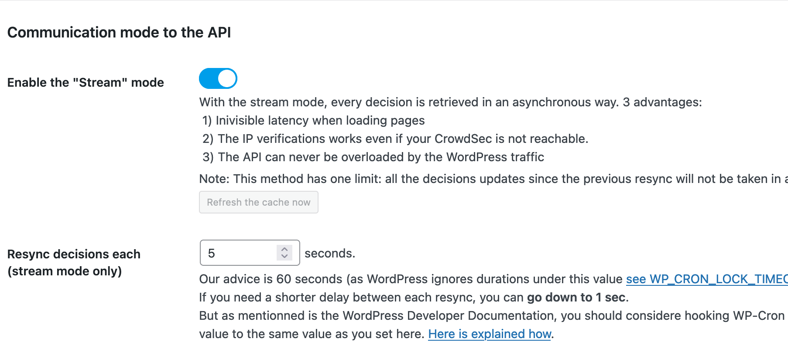
In this example, we will set the Resync intervals to every 5 seconds.
This basically controls the intervals of fetching new decisions from Crowdsec.
But there is room for experimentation and adjustment to fine-tune these settings for each use case.
Other important settings to check
If you are using a specific content delivery network (CDN), such as Cloudflare or Fastly, your website is being served either partially or completely from the CDN’s own IP addresses.
That means that the requests coming to your server will also be from the CDN and not directly from the client.
To be able to see and log the original IP addresses of the request, CDNs usually use a specific header in the HTTP packet called X-Forward-For. Adding the public IP ranges of your CDN here will tell Crowdsec to trust the requests coming from them and to look for the X-Forward-For HTTP header` to get the original source of the request.
How to whitelist CDNs
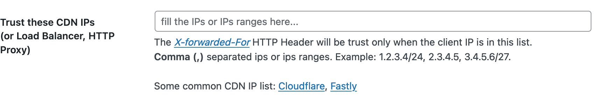
Most CDN services usually publish a list of their public IP ranges so they can be whitelisted. Find the IP ranges for two major CDN services below:
It’s also important to check the caching settings here:
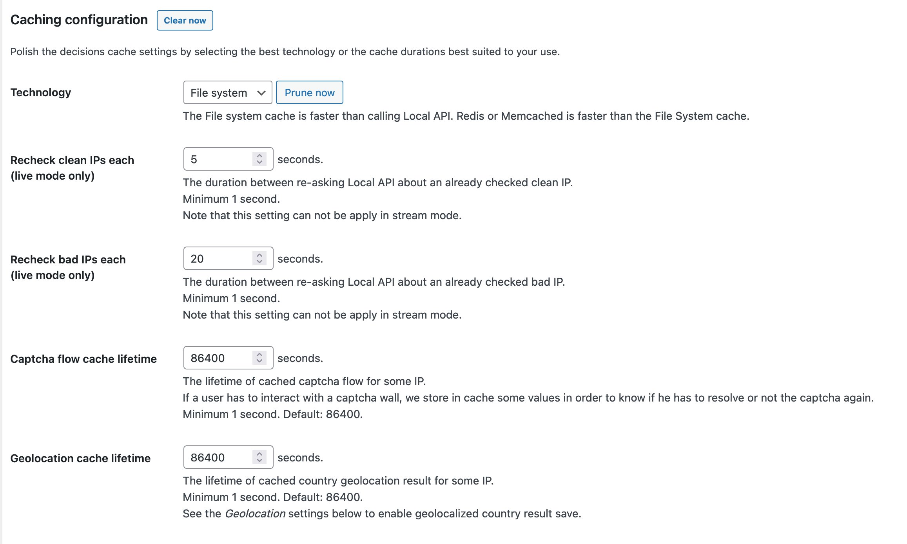
Note that
Some of these settings aren’t applicable when stream mode is enabled.
For a more detailed overview on how stream mode functions in Crowdsec, take a look at the developer’s documentation.
Now, we need to choose the Bouncing Level. There are three choices
- Bouncing disabled: No ban or Captcha display to users. The road is free, even for attackers. (No action will be taken)
- Flex bouncing: Display Captcha only, even if CrowdSec advises to ban the IP.
- Normal bouncing: Follow CrowdSec advice (Ban or Captcha).
Tip:
Normal Bouncing would be the best option if you are facing an imminent or persistent attack. Flex bouncing will only use captcha even if the decision from Crowdsec was ban. That will help in reducing the false positive bans to legitimate visitors when there is no attack.
How to test the communication between Crowdsec and the Wordpress plugin.
We can manually ban a specific IP address using Crowdsec Then, we can observe how long it takes for the plugin to pick up the decision.
To manually enforce a decision, we need to run:
cscli decisions add –ip xxx.xxx.xxx.xxx
To check the current decisions, run:
cscli decisions list
We should find our banned address here 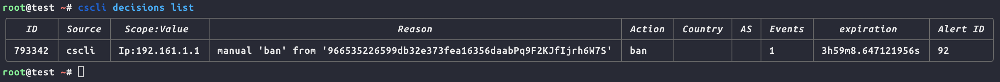
Now, if everything is working properly, we should get the following prompt screen when we try to access the website from the banned address.
Depending on the settings we discussed before, the plugin might take some time to synchronize the decisions from the API. Adjusting this time window can help increase the effectiveness of mitigating different types of attacks.
For example, to respond to an attack using a wide range of IP addresses from different locations, we will need to minimize the synchronization time as much as possible. However, we need to adjust the parameters gradually to prevent overwhelming the hardware capacities of the server or creating too many background requests.
Getting the most suitable parameters for each machine, server setup, and attack scenario will take some fiddling and observation.
Technical notes
WP-Cron
By default, WordPress uses WP-Cron to schedule its routine tasks. This should be sufficient in most cases. However, in some cases – especially with resource-hungry websites – using the operating system’s own scheduler might be better for performance.
Some custom Wordpress themes and plugins might be affected by changing this configuration, please consult the documentations below before trying
Caching and external scripts
Crowdsec will monitor and react to all requests going through normal Wordpress core loading. In some cases, such as some caching or content management plugins, external PHP scripts are run directly. Consult your website developer and review the installed and activated plugins, and if that is the case, check out the documentation, here.
Other use cases
Crowdsec has bouncers for other services and use cases. You can check them out, here.
Guides for different Crowdsec configuration scenarios
- Crowdsec bouncer for wordpress
- What is stream mode
- Using Crowdsec alongside Cloudflare
- Configuration example for DDoS mitigation
- Guide on Crowdsec installation
- Guide on Wordpress bouncer configuration
- Guide on best practices for application layer DDoS mitigation
Best practices and server optimization
Following best practices while creating and configuring the server will be of great help in the event of dealing with a DDoS attack. One very important aspect is using different server caching mechanisms and optimizing server performance and capacity.
Caching means the server will keep a cached (pre-rendered) copy of the content and serve it directly without the need to run the whole code and render a new result for every request, as long as the content is unchanged. This will not only help with DDoS resilience and mitigation but will provide improvement to the overall performance of the website or service.
For example, enabling caching using Nginx fastcgi or Redis helps reduce the load on the hosting server as it serves pre-rendered content as long as no changes were made to the content on the website.
- Guide to Nginx fastcgi configuration
- Guide to Redis caching configuration
- Using Wordops to automate Wordpress-based website installation and configuration with recommended best practices in mind
Mitigation using external services
Alongside the measures that can be implemented through self-hosted server configuration, there are a number of external services that can also aid in DDoS mitigation.
Where self-hosted server configuration allows for a higher degree of specialization and gives you complete control over the flow of your data, the range of external services discussed below – which include web application firewalls, content delivery networks, and caching – bring the benefits of a wider net born out of the more macro view these service providers have.
Before jumping into the potential services, let’s take a moment to explain each of these services. Ultimately, many service providers offer a mix of the various services in a single offer, but it is helpful to understand each of them in isolation.
Web application firewall (WAF)
A Web application firewall (WAF) is a custom type of firewall software that is specifically designed to work with specific types of applications. It can thus be configured to monitor all traffic related to this application, detect certain patterns and indications of malicious behavior, and respond to it using pre-set rules.
Content delivery network (CDN)
CDN services such as Cloudflare, Google Cloud CDN, and others all employ a global network of content caching and delivery networks, basically caching and storing parts of the website that doesn’t change so often and serving the cached data to the visitor from the nearest server to their geographical location, ultimately decreasing latency, improving load times, the overall performance for the website, and most importantly– for our case here – reducing the load and processing demands on the origin server.
Caching
Alongside caching tactics that can be implemented on the server in order to serve pre-rendered content, external services also have their own caching mechanisms that can help optimize performance and prevent resource drains.
Cloudflare
Cloudflare offers a variety of web services. Here, we will focus only on services that are most effective for DDoS mitigation.
Project Galileo
Some of the features we will be recommending in this guide aren’t available on Cloudflare’s free tier. However, since the main targeted audience here are NGOs, human rights related content, and independent media organizations, there is a dedicated program through which Cloudflare offers support for organizations that might fit that criteria.
For more information on project Galileo and how to apply, see here.
Live logs
One of the most important features will be the intuitive events processing and filtering interface.
Through this interface, we can monitor the requests coming to the website as well as search through the logs using advanced filters, which will help in identifying the patterns of the attack and create specific firewall rules to mitigate.
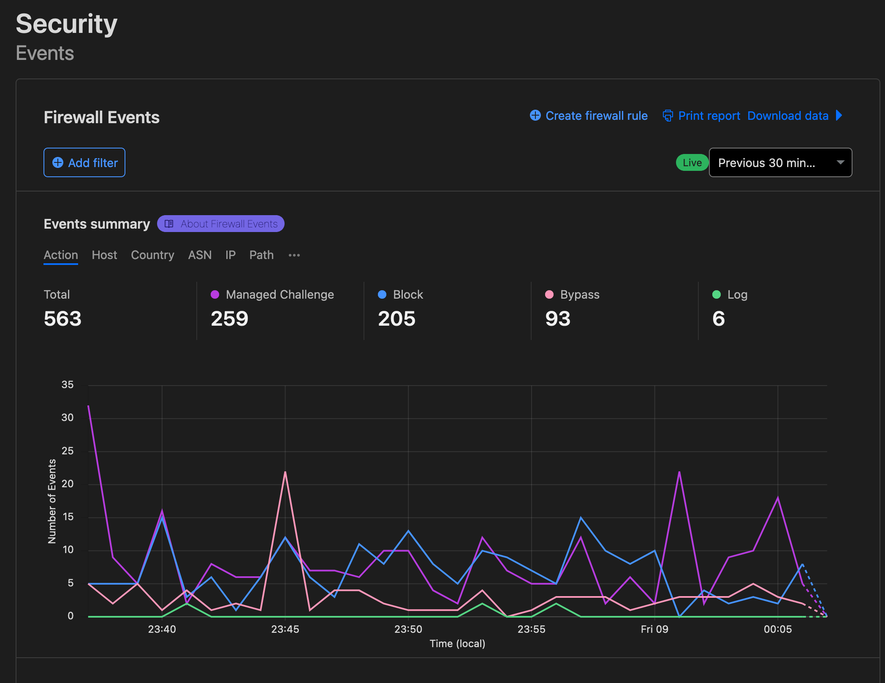
We are also able to search through the events using advanced filters. For example, we can search all the traffic coming from a specific country which is requesting a specific path.
Learn more
Click here to find out more about Cloudflare Firewall Events interface.Web Application Firewall (WAF)
On Cloudflare, we can create sets of custom access control and firewall rules, configure them to trigger certain responses based on certain rules and indications, and we can also arrange them in terms of priority.
Cloudflare offers some automated firewall rules as well, specifically curated for well known attack vectors for various widely used applications, such as Wordpress or Drupal, or attack vectors, such as SQL injection or DDoS attacks.
Learn more
You can review more about Cloudflare’s managed rules, here.Rate Limiting
Rate limiting is a very important feature in DDoS mitigation. How it ultimately works is through setting rules that limit the amount of requests allowed from a specific source. See the setting window below:
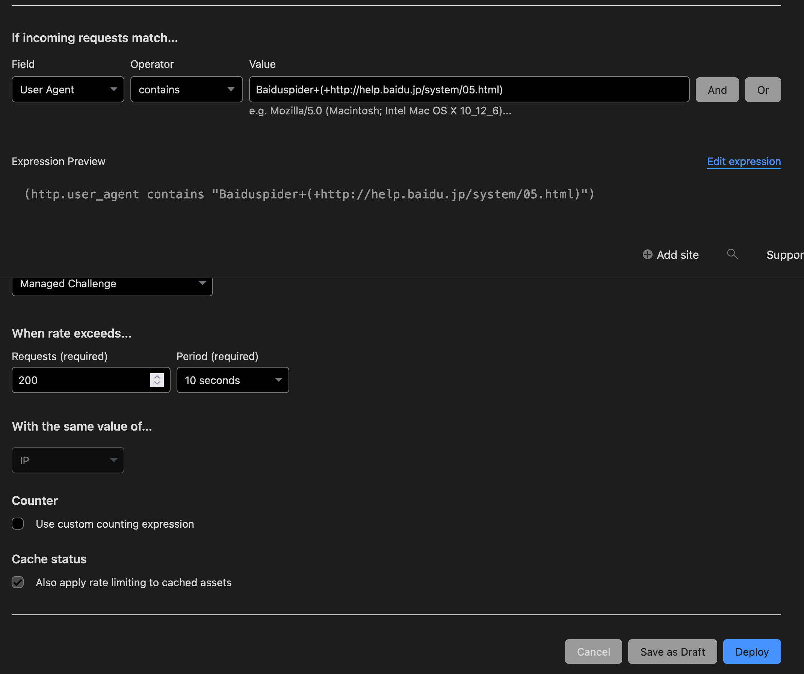
After the pre-set amount is exceeded a certain measure will be triggered. The response can include blocking the source for a period of time or indefinitely. Alternatively, it can be “challenged,” which means requests coming from the potentially malicious source will be redirected to what can be described as “an obstacle page” to slow down and verify its requests.
This obstacle can include a CAPTCHA or simply a loading page that redirects to the original website after a short wait. You can read more on rate limiting on Cloudflare, here.
Learn more
You can also read about Cloudflare’s automated DDoS protection, here.Google Shield
Shield is a DDoS protection service developed and maintained by the Jigsaw unit at Google. The service is focused on supporting independent media organizations, news outlets, and human rights organizations that could face DDoS attacks.
Shield offers a DDoS protection service that leverages a combination of caching and automated rate-limiting to mitigate DDoS attacks. It functions as a reverse-proxy standing between the origin server and the visitor/client, serving the cached content through Google’s content distribution network (CDN).
The service is offered for free. You do, however, need to apply for it. Check out the application instructions and criteria here.
Deflect
Deflect is a DDoS mitigation service built by eQualitie. The service is focused on supporting non-profit organizations at risk.
You can check the supported criteria and application instructions here.